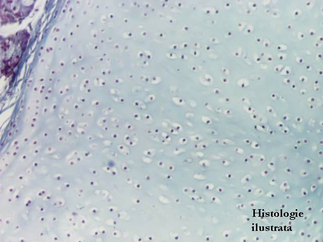
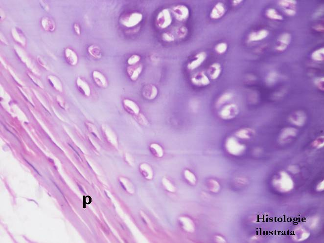
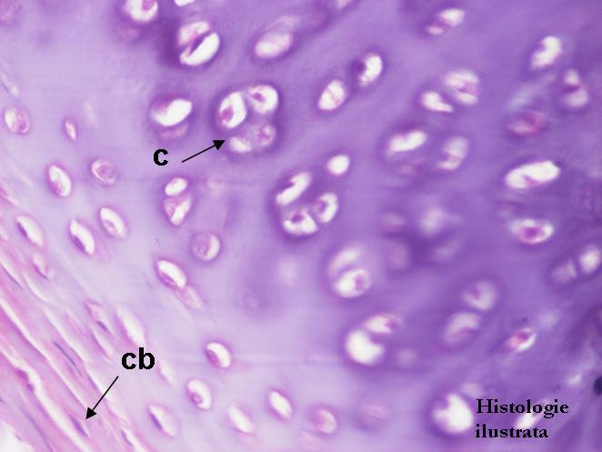
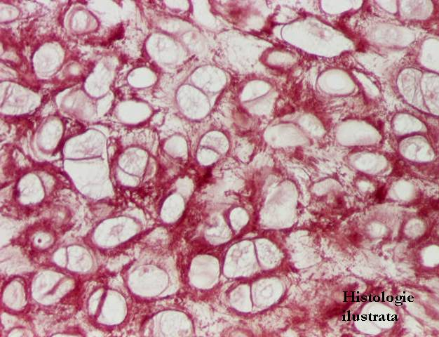
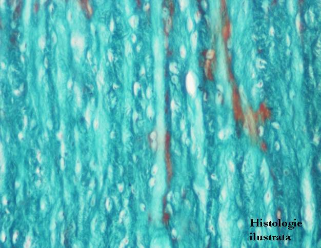

Cap.2 - Ţesutul conjunctiv
2.2. Varietăţi de ţesut conjunctiv
Ţesutul conjunctiv specializat - Ţesutul cartilaginos




Fig. 94 - Ţestul cartilaginos hialin – trahee, T.S. X 40
Fig. 95 - Ţesut cartilaginos hialin – pericondru (p), trahee, H.E. X 400
Fig. 96 - Ţesut cartilaginos hialin – condroblaste (cb.) şi condrocite în serii izogene coronare (c.), trahee, H.E. X 400
Fig. 97 - Condrocite în condroplaste – cartilagiu hialin, trahee, T.S. X 400






Fig. 98 - Condrocite în condroplaste – cartilagiu elastic, orceină X 400
Fig. 99 - Ţesutul cartilaginos fibros – T.S. X 100